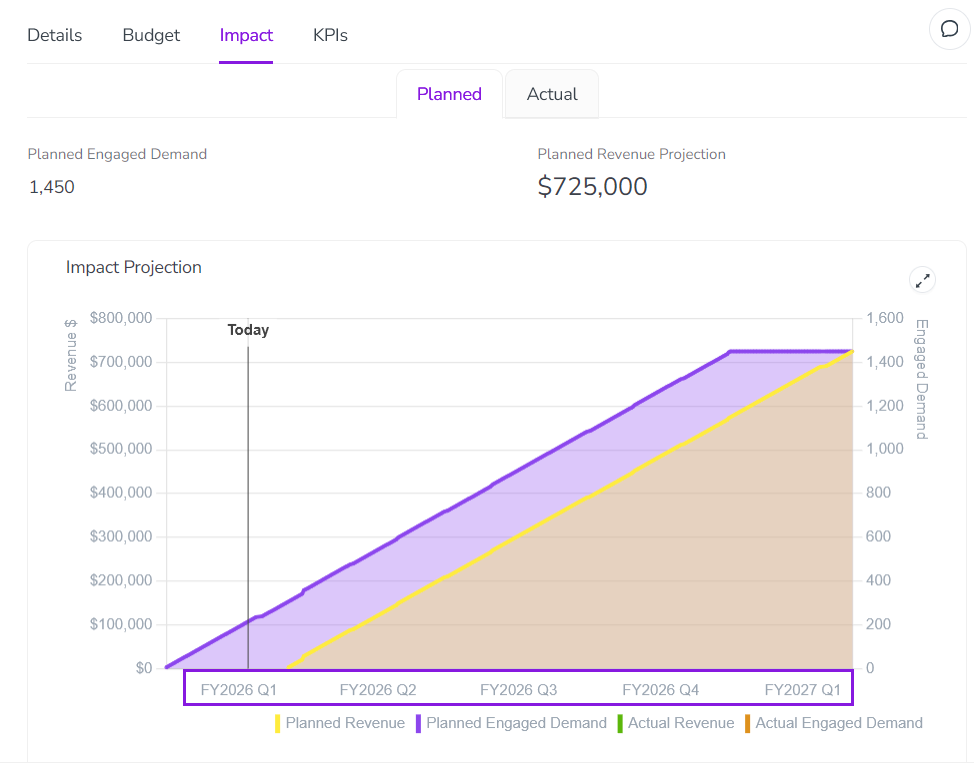

By default, Campaign Management uses the Gregorian calendar year that starts on January 1, ends on December 31, and is divided into the standard months and quarters.
Because many organizations use a fiscal year that doesn't directly align with the standard calendar year, Campaign Management can also be configured to use a customizable fiscal year instead.
The following types of fiscal year are supported:
Custom starting month
Follows the standard calendar year, but starts in a specified month (instead of January). The fiscal year starts on the first day of the selected month, and ends on the last day of the previous month: for example, April 1 - March 31.
52/53-week year
The fiscal year doesn't follow the calendar year, but instead consists of 52 whole weeks (364 days) and always ends on the same weekday. Weeks are grouped into months (periods) of 4 or 5 weeks each in a consistent quarterly pattern, and into quarters of 13 weeks (3 months) each. Every 5-6 years an extra (53rd) week is added to realign the fiscal year with the 365-day solar year.
Fiscal year customization
As there are many different variations of the 52/53-week year, this option is highly customizable. You can define your fiscal year with the following options:
How the end date of each 52/53-week year is determined
The following options are available:
Last occurrence of a weekday in a month
The fiscal year ends on the last occurrence of a selected weekday in a selected calendar month.
Example: Ends on the last Thursday of March.
Nearest occurrence of a weekday to the end of a month
The fiscal year ends on the selected weekday that is nearest to the end of a selected calendar month.
Example: Ends on the nearest Sunday to the end of June. If June 30 is a Saturday, July 1 is the nearest Sunday to the end of June.
Nth occurrence of a weekday in a month
The fiscal year ends on a selected occurrence of a selected weekday in a selected calendar month.
Example: Ends on the secondMonday of September.
Last day of ISO 8601 week-based calendar
The fiscal year follows the ISO 8601 week-numbering year standard. The year ends on the Sunday defined as the last day of the current ISO 8601 year (represented as W52-7 or W53-7, the 7th day of the 52nd or 53rd week).
Which month in each quarter is assigned the extra (fifth) week
The 52/53-week fiscal year is divided into 4 quarters of 3 months each. Because each quarter in a 52-week year contains 13 weeks, 2 months in every quarter are 4 weeks long, while the remaining month is 5 weeks long. You can specify which month in each quarter is the 5-week month.
The following options are available:
4-4-5
The third month in every quarter is 5 weeks long. For example, March, June, September, and December all contain 5 weeks; all other months contain 4 weeks.
4-5-4
The second month in every quarter is 5 weeks long. For example, February, May, August, and November all contain 5 weeks; all other months contain 4 weeks.
5-4-4
The first month in every quarter is 5 weeks long. For example, January, April, July, and October all contain 5 weeks; all other months contain 4 weeks.
Which month in each 53-week year is assigned the extra week
In 53-week years, the added week must be added to one of the months. You can select which of the 12 months will contain the extra week. The extra week is always added to the end of the selected month, and all months otherwise still follow the same quarter pattern you set for 52-week years.
Which label to display for "months" in 52/53-week years
By default, the 4/5-week "months" in 52/53-week fiscal years are labelled with the standard Gregorian calendar month names (January, February, March, etc.).
Because the time period represented by each "month" does not align with the calendar month of the same name, you can change these labels to display numbered periods instead. For example, the third month would be displayed as Period 3 (or P3 when abbreviated) instead of March (or Mar). Additionally, labels for Monthly are changed to Periodically.
What parts of Campaign Management are affected by the fiscal year settings?
When a custom fiscal year is configured in Campaign Management, it is reflected throughout the Activities section. This includes the activity Timeline, as well as most areas in the activity details panel where dates are displayed.
The main exception to this is activity in-market dates. Because execution dates for campaign activities are usually tied to specific calendar dates, in-market dates are always recorded and displayed using the standard Gregorian calendar.
The following specific areas use fiscal year dating when a fiscal year is configured:
Timeline
In the Timeline display mode, the Months, Quarters, and Years options in the Select Timeline Scale menu are replaced by FY Months, FY Quarters, and FY Years options:
When you select one of these options, the divisions on the Timeline's major and minor scale reflect the fiscal year and its quarters, months, and weeks according to your settings, instead of the Gregorian calendar's quarters, months, and weeks.
For example, in a fiscal year that begins on February 1, 2026, here is how the Timeline labels would be different compared to the Gregorian calendar when the Months/FY Months timescale is selected:
Gregorian Calendar
Fiscal Year
Month/Year label
Feb 2026
Feb FY2027
Week/Dates label
W06 2-8
FY W01 1-7
Note the differences in the displayed year as well as the week numbering: in a standard year, the first week to contain days in February might be Week 6, but in a fiscal year that begins in February, it is always Week 1.
Estimated Costs
If you have configured the Estimated Costs feature to use the Quarterly input format, the Estimated Costs panel (in the Budget section of the activity details panel) reflects the fiscal year quarters. Both the date range selector and the input fields display fiscal year labels and quarters:
The Impact section of the activity details panel reflects the fiscal year in:
Planned tab: The labels on the time axis of the projection chart: 
Actual tab: Labels on input table rows (when the Monthly/Periodically or Quarterly settings are selected in the Time Granularity menu).
KPIs
The KPIs section of the activity details panel reflects the fiscal year on the Actual tab, when modifying the Change Time Granularity and Date Range setting:
{kind=link}
{kind=link}
{kind=link}
{kind=link}